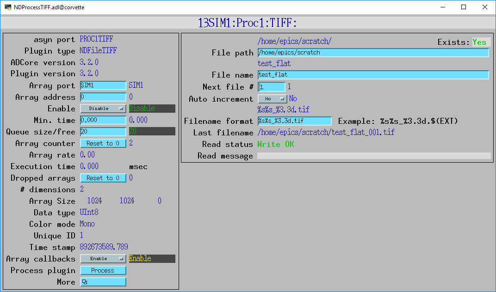
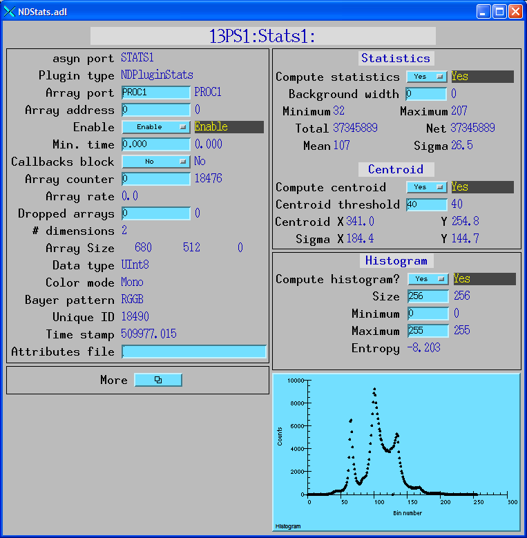

NDPluginProcess
- author:
Mark Rivers, University of Chicago
Overview
NDPluginProcess performs arithmetic processing on NDArray data. It performs the following operations in the order listed. Each of these operations can be individually enabled and disabled.
Subtracts a background array which has been previously acquired.
Divides by a flat field array which has been previously acquired, and then multiplies by a flat field scale factor.
Adds an offset and then multiplies by a scale factor.
Clips to a maximum specified value.
Clips to a minimum specified value.
Applies a recursive digital filter.
Converts to the specified output data type.
Exports the processed data as a new NDArray object.
If any of the above operations is enabled, then the array is first converted to NDFloat64 data type, i.e. double-precision float. The operations are all performed in double-precision, and then the array is converted to the specified output data type.
NDPluginProcess is both a recipient of callbacks and a source of NDArray callbacks. This means that other plugins, such the NDPluginStdArrays, NDPluginStats, and NDPluginFile plugins can be connected to an NDPluginProcess plugin, in which case they will use the processed data.
NDPluginProcess is fully N-dimensional. It can be used for 2-D images, 3-D (color) images, or any type of N-dimensional data.
NDPluginProcess inherits from NDPluginDriver. The NDPluginProcess class documentation describes this class in detail.
NDPluginProcess.h defines the following parameters. It also implements
all of the standard plugin parameters from
NDPluginDriver. The EPICS database
NDProcess.template provide access to these parameters, listed in the
following table. Note that to reduce the width of this table the
parameter index variable names have been split into 2 lines, but these
are just a single name, for example NDPluginProcessSaveBackground.
Parameter Definitions in NDPluginProcess.h and EPICS Record Definitions in NDProcess.template |
||||||
|---|---|---|---|---|---|---|
Parameter index variable |
asyn interface |
Access |
Description |
drvInfo string |
EPICS record name |
EPICS record type |
Background subtraction |
||||||
NDPluginProcess, SaveBackground |
asynInt32 |
r/w |
Command to use the most recently acquired array as a background. Note that this recently acquired array should have been acquired with EnableBackground=0, or else that array will already have had the background subtracted, which is probably not what was intended! |
SAVE_BACKGROUND |
$(P)$(R)SaveBackground, $(P)$(R)SaveBackground_RBV |
bo, bi |
NDPluginProcess, ValidBackground |
asynInt32 |
r/o |
Flag indicating whether there is a valid background array that has been acquired for this array using SaveBackground. This flag will be Invalid (0) if no background has been acquired, or if the size of the array has changed since the background was last acquired. |
VALID_BACKGROUND |
$(P)$(R)ValidBackground_RBV |
bi |
NDPluginProcess, EnableBackground |
asynInt32 |
r/w |
Flag indicating whether the background array acquired with SaveBackground should be subtracted when processing the array. If ValidBackground=0 then no background subtraction is done even if EnableBackground=Enable. |
ENABLE_BACKGROUND |
$(P)$(R)EnableBackground, $(P)$(R)EnableBackground_RBV |
bo, bi |
N.A. |
N.A. |
r/w |
This is a convenience sseq record to simplify reading the background array from
a TIFF file. Prior to processing this record the $(P)$(R)TIFF: plugin records must
be correctly configured to read the desired background TIFF file. Processing this
record does the following steps. |
N.A. |
$(P)$(R)ReadBackgroundTIFFSeq |
sseq |
Flat field normalization |
||||||
NDPluginProcess, SaveFlatField |
asynInt32 |
r/w |
Command to use the most recently acquired array as a flat field. Note that this recently acquired array should have been acquired with EnableFlatField=0, or else that array will already have been flat field normalized, which is probably not what was intended! |
SAVE_FLAT_FIELD |
$(P)$(R)SaveFlatField, $(P)$(R)SaveFlatField_RBV |
bo, bi |
NDPluginProcess, ValidFlatField |
asynInt32 |
r/o |
Flag indicating whether there is a valid flat field array that has been acquired for this array using SaveFlatField. This flag will be Invalid (0) if no flat field has been acquired, or if the size of the array has changed since the flat field was last acquired. |
VALID_FLAT_FIELD |
$(P)$(R)ValidFlatField_RBV |
bi |
NDPluginProcess, EnableFlatField |
asynInt32 |
r/w |
Flag indicating whether the array should be divided by the flat field array (acquired with SaveFlatField) when processing the array. If ValidFlatField=0 then no flat field normalization is done even if EnableBackground=Enable. The processing step consists of: , Array = Array / FlatField * ScaleFlatField |
ENABLE_FLAT_FIELD |
$(P)$(R)EnableFlatField, $(P)$(R)EnableFlatField_RBV |
bo, bi |
NDPluginProcess, ScaleFlatField |
asynFloat64 |
r/w |
The scale factor to multiply by after dividing the array by the flat field array. This scale factor is normally chosen so that the data after scaling fills the dynamic range of the output data type. |
SCALE_FLAT_FIELD |
$(P)$(R)ScaleFlatField, $(P)$(R)ScaleFlatField_RBV |
ao, ai |
N.A. |
N.A. |
r/w |
This is a convenience sseq record to simplify reading the flatfield array from a
TIFF file. Prior to processing this record the $(P)$(R)TIFF: plugin records must
be correctly configured to read the desired flatfield TIFF file. Processing this
record does the following steps. |
N.A. |
$(P)$(R)ReadFlatFieldTIFFSeq |
sseq |
Scaling and offset |
||||||
NDPluginProcess, EnableOffsetScale |
asynInt32 |
r/w |
Flag indicating whether the array should be summed with an Offset and then multiplied by Scale when processing the array. The processing step consists of: Array = (Array + Offset) * Scale |
ENABLE_OFFSET_SCALE |
$(P)$(R)EnableOffsetScale, $(P)$(R)EnableOffsetScale_RBV |
bo, bi |
NDPluginProcess, AutoOffsetScale |
asynInt32 |
r/w |
Processing this record will enable Offset and Scale calculations, and set the Offset=-min(Array) and Scale=MaxScale/(max(Array)-min(Array)), where MaxScale is the maximum value of the output data type. The output array will thus be scaled to go from zero to the maximum value of the output data type. Note that the calculation of the offset and scale factors is only done once when this record is processed, and these values are used for subsequent array callbacks, i.e. it does not autoscale on each array callback. Thanks to Tom Cobb for this addition. |
AUTO_OFFSET_SCALE |
$(P)$(R)AutoOffsetScale |
busy |
NDPluginProcess, Scale |
asynFloat64 |
r/w |
The scale factor to multiply by. |
SCALE |
$(P)$(R)Scale, $(P)$(R)Scale_RBV |
ao, ai |
NDPluginProcess, Offset |
asynFloat64 |
r/w |
The offset to add. |
OFFSET |
$(P)$(R)Offset, $(P)$(R)Offset_RBV |
ao, ai |
Low and high clipping |
||||||
NDPluginProcess, EnableLowClip |
asynInt32 |
r/w |
Flag to control whether to clip values to the LowClip value for this array (0=Disable, 1=Enable). |
ENABLE_LOW_CLIP |
$(P)$(R)EnableLowClip, $(P)$(R)EnableLowClip_RBV |
bo, bi |
NDPluginProcess, LowClipThresh |
asynFloat64 |
r/w |
The low clipping threshold. If EnableLowClip=1, then all values in the array less than LowClipThresh will be replaced by LowClipValue. |
LOW_CLIP_THRESH |
$(P)$(R)LowClipThresh, $(P)$(R)LowClipThresh_RBV |
ao, ai |
NDPluginProcess, LowClipValue |
asynFloat64 |
r/w |
The low clipping replacement value. If EnableLowClip=1, then all values in the array less than LowClipThresh will be replaced by LowClipValue. |
LOW_CLIP_VALUE |
$(P)$(R)LowClipValue, $(P)$(R)LowClipValue_RBV |
ao, ai |
NDPluginProcess, EnableHighClip |
asynInt32 |
r/w |
Flag to control whether to clip values to the HighClip value for this array (0=Disable, 1=Enable). |
ENABLE_HIGH_CLIP |
$(P)$(R)EnableHighClip, $(P)$(R)EnableHighClip_RBV |
bo, bi |
NDPluginProcess, HighClipThresh |
asynFloat64 |
r/w |
The high clipping threshold. If EnableHighClip=1, then all values in the array greater than HighClipThresh will be replaced by HighClipValue. |
HIGH_CLIP_THRESH |
$(P)$(R)HighClipThresh, $(P)$(R)HighClipThresh_RBV |
ao, ai |
NDPluginProcess, HighClipValue |
asynFloat64 |
r/w |
The high clipping replacement value. If EnableHighClip=1, then all values in the array greater than HighClipThresh will be replaced by HighClipValue. |
HIGH_CLIP_VALUE |
$(P)$(R)HighClipValue, $(P)$(R)HighClipValue_RBV |
ao, ai |
NDPluginProcess, DataType |
asynInt32 |
r/w |
Data type of the output array (NDDataType_t). This can be different from the data type of the NDArray callback data. |
PROCESS_DATA_TYPE |
$(P)$(R)DataTypeOut, $(P)$(R)DataTypeOut_RBV |
mbbo, mbbi |
Recursive filter |
||||||
NDPluginProcess, EnableFilter |
asynInt32 |
r/w |
Flag indicating whether the array should be processed with a recursive filter. The details of the filter operation are explained below., - ENABLE_FILTER |
$(P)$(R)EnableFilter, $(P)$(R)EnableFilter_RBV |
bo, bi |
|
NDPluginProcess, ResetFilter |
asynInt32 |
r/w |
Command to reset the filter back to its initial state. |
RESET_FILTER |
$(P)$(R)ResetFilter, $(P)$(R)ResetFilter_RBV |
bo, bi |
NDPluginProcess, AutoResetFilter |
asynInt32 |
r/w |
If enabled then when NumFiltered=NumFilter the filter automatically resets. This can be very useful when using the Average or Sum filter modes. As soon as N sums or averages have been performed the filter resets, so the next sum or average is computed. |
AUTO_RESET_FILTER |
$(P)$(R)AutoResetFilter, $(P)$(R)AutoResetFilter_RBV |
bo, bi |
NDPluginProcess, FilterCallbacks |
asynInt32 |
r/w |
Choices are “Every array” and “Array N only”. If “Every array” is selected then the plugin does callbacks for every incoming array it receives. If “Array N only” is selected then the plugin only does callbacks when NumFiltered=NumFilter. This can be very useful when using the Sum or Average filter modes. Callbacks are then done only when N sums or averages have been performed. If used with AutoResetFilter then as input arrays arrive the plugin will continually output one summed or averaged array after every N incoming arrays. |
FILTER_CALLBACKS |
$(P)$(R)FilterCallbacks, $(P)$(R)FilterCallbacks_RBV |
bo, bi |
NDPluginProcess, NumFilter |
asynInt32 |
r/w |
The characteristic number of arrays to use when filtering. The value of NumFiltered will increase as each array is processed, until it reaches the value of NumFilter, when it will no longer increase. The value of NumFiltered is used in the filter equations, as explained below. |
NUM_FILTER |
$(P)$(R)NumFilter, $(P)$(R)NumFilter_RBV |
longout, longin |
NDPluginProcess, NumFiltered |
asynInt32 |
r/o |
The number of arrays that have been processed by the filter since the filter was last reset. The value of NumFiltered is incremented as each array is processed, until it reaches the value of NumFilter, when it will cease incrementing. The value of NumFiltered is used in the filter equations, as explained below. |
NUM_FILTERED |
$(P)$(R)NumFiltered_RBV |
longin |
N.A. |
N.A. |
r/w |
The filter type, chosen from a predefined list, as described below. |
N.A. |
$(P)$(R)FilterType |
mbbo |
NDPluginProcess, OOffset |
asynFloat64 |
r/w |
Output offset coefficient. |
FILTER_OOFFSET |
$(P)$(R)OOffset, $(P)$(R)OOffset_RBV |
ao, ai |
NDPluginProcess, OScale |
asynFloat64 |
r/w |
Output scale coefficient. |
FILTER_OSCALE |
$(P)$(R)OScale, $(P)$(R)OScale_RBV |
ao, ai |
NDPluginProcess, OC1 |
asynFloat64 |
r/w |
Output coefficient #1. |
FILTER_OC1 |
$(P)$(R)OC1, $(P)$(R)OC1_RBV |
ao, ai |
NDPluginProcess, OC2 |
asynFloat64 |
r/w |
Output coefficient #2. |
FILTER_OC2 |
$(P)$(R)OC2, $(P)$(R)OC2_RBV |
ao, ai |
NDPluginProcess, OC3 |
asynFloat64 |
r/w |
Output coefficient #3. |
FILTER_OC3 |
$(P)$(R)OC3, $(P)$(R)OC3_RBV |
ao, ai |
NDPluginProcess, OC4 |
asynFloat64 |
r/w |
Output coefficient #4. |
FILTER_OC4 |
$(P)$(R)OC4, $(P)$(R)OC4_RBV |
ao, ai |
NDPluginProcess, FOffset |
asynFloat64 |
r/w |
Filter offset coefficient. |
FILTER_FOFFSET |
$(P)$(R)FOffset, $(P)$(R)FOffset_RBV |
ao, ai |
NDPluginProcess, FScale |
asynFloat64 |
r/w |
Filter scale coefficient. |
FILTER_FSCALE |
$(P)$(R)FScale, $(P)$(R)FScale_RBV |
ao, ai |
NDPluginProcess, FC1 |
asynFloat64 |
r/w |
Filter coefficient #1. |
FILTER_FC1 |
$(P)$(R)FC1, $(P)$(R)FC1_RBV |
ao, ai |
NDPluginProcess, FC2 |
asynFloat64 |
r/w |
Filter coefficient #2. |
FILTER_FC2 |
$(P)$(R)FC2, $(P)$(R)FC2_RBV |
ao, ai |
NDPluginProcess, FC3 |
asynFloat64 |
r/w |
Filter coefficient #3. |
FILTER_FC3 |
$(P)$(R)FC3, $(P)$(R)FC3_RBV |
ao, ai |
NDPluginProcess, FC4 |
asynFloat64 |
r/w |
Filter coefficient #4. |
FILTER_FC4 |
$(P)$(R)FC4, $(P)$(R)FC4_RBV |
ao, ai |
NDPluginProcess, ROffset |
asynFloat64 |
r/w |
Reset offset coefficient. |
FILTER_ROFFSET |
$(P)$(R)ROffset, $(P)$(R)ROffset_RBV |
ao, ai |
NDPluginProcess, RC1 |
asynFloat64 |
r/w |
Filter coefficient #1. |
FILTER_RC1 |
$(P)$(R)RC1, $(P)$(R)RC1_RBV |
ao, ai |
NDPluginProcess, RC2 |
asynFloat64 |
r/w |
Filter coefficient #2. |
FILTER_RC2 |
$(P)$(R)RC2, $(P)$(R)RC2_RBV |
ao, ai |
Recursive filter implementation
The recursive filter performs filtering in the time (not spatial) domain. It is implemented in a fairly general manner, so that a variety of filters can be implemented. These include integrating filters and differentiating filter types. The recursive filter stores one “filter” array internally. Using this internal filter array, and a new input array, it computes an output array, and a new version of the filter array. The equations governing the output array and new filter array are:
O[n] = OOffset + OScale*((OC1 + OC2/N)*F[n-1] +
(OC3 + OC4/N)*I[n])
F[n] = FOffset + FScale*((FC1 + FC2/N)*F[n-1] +
(FC3 + FC4/N)*I[n])
On filter reset
F[0] = ROffset + RC1*F[0] + RC2*I[0]
where
I[n] = New input array from callback
I[0] = First input array after a filter reset
F[n-1] = Stored filter array
F[n] = New filter array
F[0] = Current filter array when filter is reset.
May be a copy of I[0] if there was no valid filter array.
N = Current value of NumFiltered
O[n] = Output array passed to clients
Predefined filters
The NDProcess.template database implements the following predefined
filters using the $(P)$(R)FilterType record. The implementation of these
predefined filter types is done entirely in the database, not in the
plugin code. The database simply downloads values of OC1-OC4, FC1-FC4,
and RC1-RC2 that result in predefined filter behaviours. The operation
of the recursive filter is by no means limited to these fixed filter
types, they are simply provided as a convenience, and can be easily
modified or extended. Note that the database does not download values of
OOffset, OScale, FOffset, FScale, or ROffset, so these remain unchanged
when a new filter is selected. The equations below do not include these
offset and scale values, but they are useful in many circumstances.
The NDProcess_settings.req file for save/restore saves the values of all
of the filter coefficients, and downloads them when EPICS initialized at
iocInit. It also saves the FilterType, but does not process this record
at iocInit, so that any customized filter coefficients will be
preserved, and will not be replaced by the defaults for that filter
type.
Recursive Average
The recursive average filter does input array averaging. It is defined as:
O[n] = F[n] = (1-1/N)*F[n-1] + 1/N*I[n]
N is the characteristic number of arrays in the average. For example, if N=100, then each new array is weighted by 0.01 and the previous filter value is weighted by 0.99. This is an infinite impulse response (IIR) filter, because the effect of one array never complelely dissappears, but rather decays exponentially. When this filter is reset the filter array is initialized with the first input array. This filter can be used to decrease the noise and increase the dynamic range of a repetitive input signal with a small signal. In that case it can be useful to use set EnableOffsetScale=Enable and set Scale to a large enough number to more fully use the dynamic range of the output data type. The averaged signal will then better use the dynamic range of the output data type.
Average
The average filter does input array averaging. It is defined as:
O[n] = F[n] = F[n-1] + 1/N*I[n]
N is the number of arrays in the average. For example, if N=100, then each new array is weighted by 0.01. When this filter is reset the filter array is initialized to 0. This filter typically cannot be run forever, because the output grows monotonically and will lead to overflow. However, if AutoResetFilter is enabled then the filter will be reset when NumFiltered=NumFilter. If ArrayCallbacks is “Array N only” then callbacks will be done only with the final averaged value.
Sum
The sum filter does input array summing. It is defined as:
O[n] = F[n] = F[n-1] + I[n]
This filter simply computes the sum of input arrays. When this filter is reset the filter array is initialized to 0. It is often necessary to set the output data type to one with a larger maximum value than the input array to prevent overflow. If AutoResetFilter is enabled then the filter will be reset when NumFiltered=NumFilter. If ArrayCallbacks is “Array N only” then callbacks will be done only with the final summed value.
Difference
The difference filter computes the difference between frame N and frame N-1. It is defined as:
O[n] = -F[n-1] + I[n]
F[n] = I[n]
Note that the difference will often be a small signed number. If the output datatype is unsigned, or if a display client expects unsigned numbers, then it can be useful to set OOffset to a non-zero value to add an offset to the result. For example, if the output data type is UInt8 (unsigned 8-bit), then setting OOffset to 128 will produce an unsigned image centered at 128. Similarly OScale can be used to increase the range of the difference by multiplying by a factor greater than 1, although this will not increase the dynamic range of the result, only the absolute range.
Recursive Average Difference
This filter computes the difference between frame N and the recursive average of previous frames. It is a combination of the Difference and Recursive Average filters described above. The new filter is a recursive average, but the output is the difference between the current frame and that recursive average. It is defined as:
O[n] = -F[n-1] + I[n]
F[n] = (1-1/N)*F[n-1] + 1/N*I[n]
N is again the characteristic number of arrays in the average.
Copy to Filter
This filter simply copies the input array to the filter array and the output array. It is defined as:
O[n] = F[n] = I[n]
This filter can be used to load the filter (F) with a certain array, which is then subsequently used for some other filter type.
Configuration
The NDPluginProcess plugin is created with the NDProcessConfigure command, either from C/C++ or from the EPICS IOC shell.
NDProcessConfigure(const char *portName, int queueSize, int blockingCallbacks,
const char *NDArrayPort, int NDArrayAddr,
int maxBuffers, size_t maxMemory,
int priority, int stackSize)
For details on the meaning of the parameters to this function refer to the detailed documentation on the NDProcessConfigure function in the NDPluginProcess.cpp documentation and in the documentation for the constructor for the NDPluginProcess class.
Screen shots
The following is the MEDM screen that provides access to the parameters
in NDPluginDriver.h and NDPluginProcess.h through records in
NDPluginBase.template and NDProcess.template.
In this example the image is low clipped with a threshold of 300 and a
replacement value of 0, and high-clipped with a threshold of 1000 and a
replacement value of 0.
The following is the MEDM screen for reading a background image or flatfield image from a TIFF file. It is a stripped-down version of the normal TIFF plugin screen, and allows specifying the path and filename components to construct the full filename.
In another test the input image is first offset by -4 and scaled by 35. That result is then clipped to a minimum of 0 and a maximum of 255. The image is then run through a recursive averaging filter with N=100.
Image collected with 30 microsecond exposure time, so it is very noisy. This is the image output from the NDPlugProcess plugin with Offset and Scale as listed above, but with the recursive filter disabled.
NDPluginStats plugin connected to the NDPluginProcess filter for the noisy image above. Note that there are only 6 non-zero intensities in the histogram, because the brightest pixels are only 6 A/D units above background.
Same image collected with 30 microsecond exposure time. This is the image output from the NDPlugProcess plugin with Offset and Scale as listed above, with the recursive filter enabled. Note the dramatic improvement in signal to noise.
NDPluginStats plugin connected to the NDPluginProcess filter for the filtered image above. Note that there are many non-zero intensities in the histogram, because the filtering is improving the dynamic range significantly.
